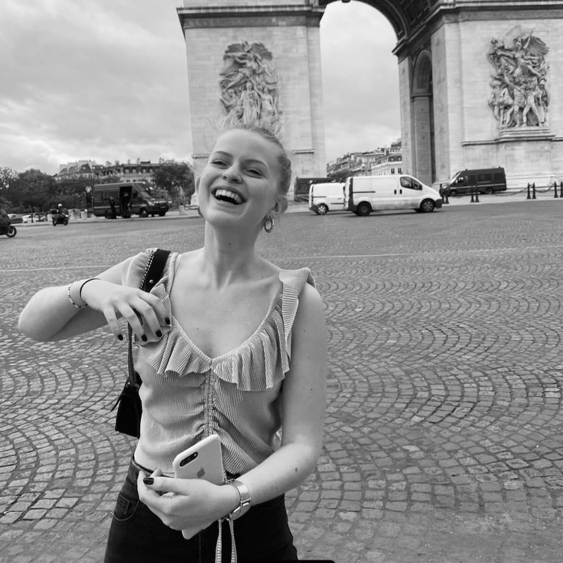

About me
My creations
J
Contact me
Français

Julie Bernard
djvnjkdfbvjdfbv
cjdsbvjb
La Liberté guidant le peuple

La Liberté guidant le peuple est une huile sur toile d'Eugène Delacroix réalisée en 1830, inspirée de la révolution des Trois Glorieuses. Présenté au public au Salon de Paris de 1831 sous le titre Scènes de barricadesnote 1, le tableau est ensuite exposé au musée du Luxembourg à partir de 1863 puis transféré au musée du Louvre en 1874 où il fut l'un des plus fréquentés. En 2013, il est la pièce majeure de l'exposition La Galerie du temps au Louvre-Lens.
La Joconde

La Joconde, ou Portrait de Mona Lisa, est un tableau de l'artiste Léonard de Vinci, réalisé entre 1503 et 1506 ou entre 1513 et 15161,2, et peut-être jusqu'à 1519 (l'artiste étant mort cette année-là, le 2 mai)3, qui représente un portrait mi-corps, probablement celui de la Florentine Lisa Gherardini, épouse de Francesco del Giocondo. Acquise par François Ier, cette peinture à l'huile sur panneau de bois de peuplier de 77 × 53 cm est exposée au musée du Louvre à Paris. La Joconde est l'un des rares tableaux attribués de façon certaine à Léonard de Vinci.